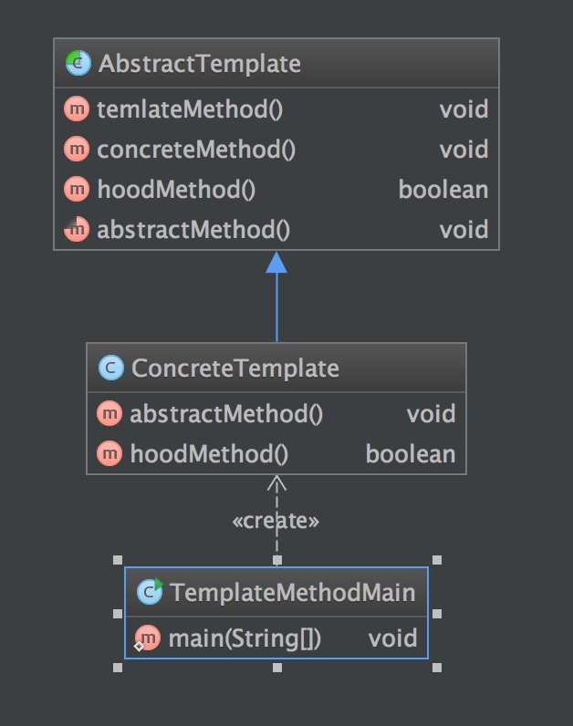
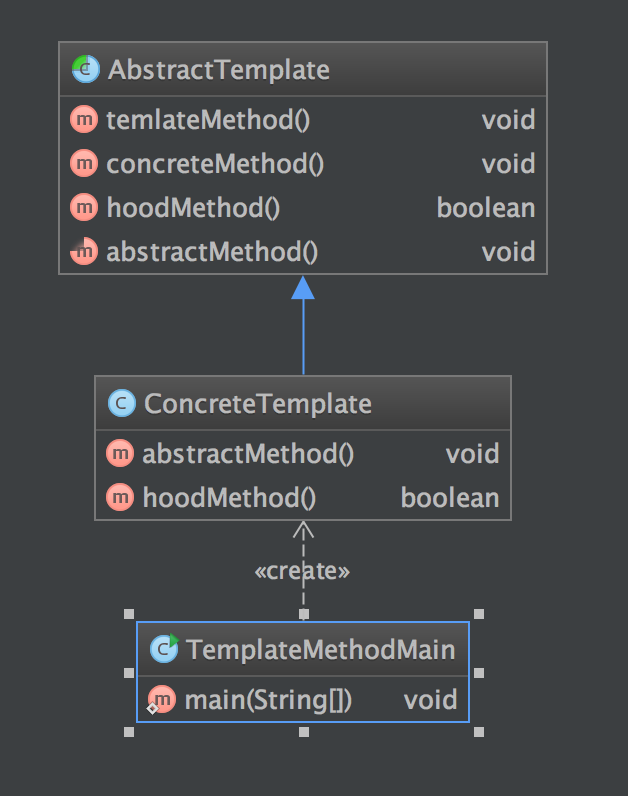

定义
模板方法模式定义了一个算法的步骤，并允许次类别为一个或多个步骤提供其实践方式。让次类别在不改变算法架构的情况下，重新定义算法中的某些步骤。
使用场景
- 一次性实现一个算法的不变部分，把变化部分留给子类去实现。
- 各子类间的共同行为需要被提取并集中到一个共同的类中来避免代码的重复。你首先识别出这些现有代码的不同之处，然后把这些不同之处分离到新的操作中。最后，你用一个模板方法调用这些新操作之一来替代原有那些不同的代码。
- 控制子类扩展。你能定义一个只在特定点调用 hook 操作的模板方法，以此只允许子类在这些点扩展。
UML 图

AbstractTemplate：抽象模板
- 定义了一个或多个抽象操作，以便让子类实现。这些抽象操作叫做基本操作，它们是一个顶级逻辑的组成步骤。
- 定义并实现了一个模板方法。这个模板方法一般是一个具体方法，它给出了一个顶级逻辑的骨架，而逻辑的组成步骤在相应的抽象操作中，推迟到子类实现。顶级逻辑也有可能调用一些具体方法。
ConcreteTemplate：具体实现
- 实现父类所定义的一个或多个抽象方法，它们是一个顶级逻辑的组成步骤。
- 每一个抽象模板角色都可以有任意多个具体模板角色与之对应，而每一个具体模板角色都可以给出这些抽象方法（也就是顶级逻辑的组成步骤）的不同实现，从而使得顶级逻辑的实现各不相同。
简单实现
例子
public abstract class AbstractTemplate {
public void temlateMethod() {
abstractMethod();
if (hoodMethod()) {
System.out.println("hook");
} else {
System.out.println("unhook");
}
concreteMethod();
}
private void concreteMethod() {
System.out.println("AbstractTemplate concreteMethod");
}
protected boolean hoodMethod() {
return false;
}
protected abstract void abstractMethod();
}
public class ConcreteTemplate extends AbstractTemplate {
@Override
protected void abstractMethod() {
System.out.println("ConcreteTemplate abstractMethod");
}
@Override
protected boolean hoodMethod() {
return true;
}
}
客户端调用
public class TemplateMethodMain {
public static void main(String[] args) {
System.out.println("TemplateMethodMain RUNNING");
ConcreteTemplate concreteTemplate = new ConcreteTemplate();
concreteTemplate.temlateMethod();
}
}
结果
TemplateMethodMain RUNNING
ConcreteTemplate abstractMethod
hook
AbstractTemplate concreteMethod
类图

优缺点
- 优点
- 实现了代码复用
- 能够灵活应对子步骤的变化，符合开放-封闭原则
- 缺点
- 因为引入了一个抽象类，如果具体实现过多的话，需要用户或开发人员需要花更多的时间去理清类之间的关系
## 总结
- 因为引入了一个抽象类，如果具体实现过多的话，需要用户或开发人员需要花更多的时间去理清类之间的关系
- 封装不变部分，扩展可变部分。把认为是不变部分的算法封装到父类实现，而可变部分的则可以通过继承来继续扩展。
- 提取公共部分代码，便于维护
- 基本方法又可以分为三种：抽象方法(Abstract Method)、具体方法(Concrete Method)和钩子方法(Hook Method)。
- 抽象方法：一个抽象方法由抽象类声明，由具体子类实现。在Java语言里抽象方法以abstract关键字标示。
- 具体方法：一个具体方法由抽象类声明并实现，而子类并不实现或置换。
- 钩子方法：一个钩子方法由抽象类声明并实现，而子类会加以扩展。通常抽象类给出的实现是一个空实现，作为方法的默认实现。
参考
https://zh.wikipedia.org/wiki/模板方法
http://dreamrunner.org/blog/2014/05/04/浅谈设计模式10/
『head first 设计模式』